9 - Generative Models
After this lecture you should be able to:
- Explain the core mechanisms of major generative model families: autoregressive models, diffusion models, GANs, and VAEs
- Explain why diffusion models became central for modern image generation
- Describe how latent diffusion makes high-resolution image generation practical
- Explain how conditional generation enables text-to-image, image editing, inpainting, and controlled generation
- Understand why recent systems increasingly use Transformer-based diffusion or flow backbones
- Explain how pre-trained models, prompting, ControlNet, and LoRA are used in practical workflows
- Discuss limitations, evaluation challenges, authenticity risks, and bias in image generation
Modern image generation is built around learning to sample realistic images from a data distribution.
- Autoregressive models generate sequentially and provide exact likelihood, but are slow for images.
- GANs generate quickly and can produce sharp images, but are difficult to train and can suffer from mode collapse.
- VAEs provide a structured latent space and approximate likelihood, but classical VAEs often produce blurrier samples.
- Diffusion models generate by learning to reverse a noising process and are currently central to high-quality image generation.
- Latent diffusion runs diffusion in a compressed VAE latent space, making models such as Stable Diffusion practical.
- Recent frontier systems increasingly use Transformer-based diffusion or flow backbones, multimodal conditioning, image editing, and stronger instruction following.
- Practical use is usually based on pre-trained models, prompting, image conditioning, ControlNet, LoRA, and APIs rather than training from scratch.
1 Generative Model Families
1.1 Four Major Families
Over the past decade, several families of generative models have emerged.
They differ in how they model the data distribution, how they generate samples, and which tradeoffs they make.
| Model family | Core idea | Main strength | Main limitation |
|---|---|---|---|
| Autoregressive | Generate one token/pixel/patch after another | Exact likelihood | Slow sequential sampling |
| GANs | Generator competes against discriminator | Fast, sharp samples | Training instability, mode collapse |
| VAEs | Learn structured latent space with encoder/decoder | Smooth latent space | Often blurrier samples |
| Diffusion | Learn to reverse a noising process | High quality and diversity | Iterative sampling cost |
For modern image generation, diffusion and diffusion-like flow models are the most important family to understand.
1.2 Autoregressive Models
Autoregressive models generate data sequentially, predicting one element at a time conditioned on all previous elements.
For an image represented as a sequence of pixels, patches, or discrete image tokens:
\[ p(x_1, x_2, \ldots, x_n) = p(x_1) \cdot p(x_2|x_1) \cdot p(x_3|x_1,x_2) \cdots p(x_n|x_1,\ldots,x_{n-1}) \]
During generation, the model samples step by step:
- Sample \(x_1 \sim p(x_1)\)
- Sample \(x_2 \sim p(x_2|x_1)\)
- Sample \(x_3 \sim p(x_3|x_1,x_2)\)
- Continue until the full image is generated
Autoregressive models turn image generation into a sequence prediction problem.
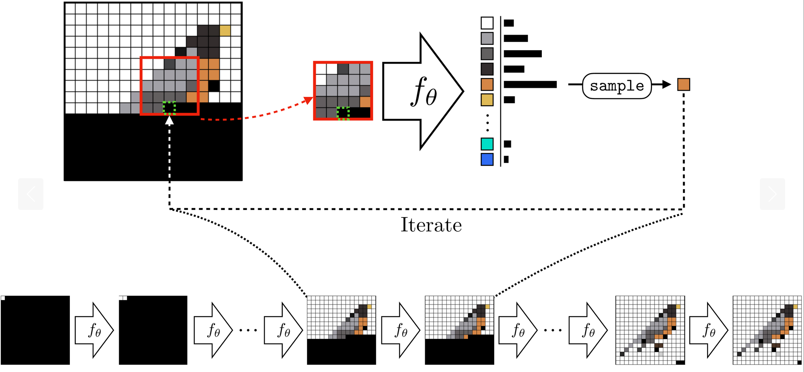
1.3 Autoregressive Models: Pros and Cons
Pros
- Exact likelihood computation
- Natural fit for language models
- Strong for discrete tokens
- Can model complex dependencies
Cons
- Sequential generation is slow
- Pixel-level image generation is expensive
- High-resolution images require long sequences
- Errors can accumulate during sampling
Autoregressive ideas are still very important. Many modern multimodal systems use LLM-like components, visual tokens, or autoregressive reasoning, even if the final image generation is diffusion-based.
1.4 Quiz: Autoregressive Generation
Why is autoregressive generation usually slower than GAN or VAE sampling?
Click for answer
Because samples are generated sequentially. The model must generate each element conditioned on previous elements, so generation cannot be fully parallelized.
2 Diffusion Models
2.1 Diffusion Models: Core Intuition
Diffusion models learn to reverse a gradual destruction process.
Training idea:
- Start with a real image
- Add noise until the image becomes almost pure noise
- Train a neural network to remove the noise
- Generate by starting from random noise and denoising step by step
A diffusion model does not create an image in one step. It gradually transforms noise into an image.
2.2 Forward Diffusion
The forward diffusion process adds Gaussian noise to an image over many timesteps.
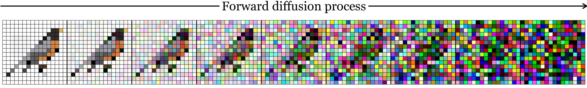
At timestep \(t\):
\[\begin{equation} z_t = \sqrt{1-\beta_t} z_{t-1} + \sqrt{\beta_t} \epsilon_t, \quad \epsilon_t \sim \mathcal{N}(0, I) \end{equation}\]
where \(\beta_t\) controls how much noise is added.
2.3 Reverse Diffusion
The model learns the reverse process:

Starting from noise:
\[ z_T \sim \mathcal{N}(0, I) \]
the model repeatedly denoises:
\[ z_T \rightarrow z_{T-1} \rightarrow \ldots \rightarrow z_0 \]
where \(z_0\) should look like a realistic image.
2.4 What Does the Network Learn?
The denoising network is often trained to predict the noise that was added:
\[\begin{equation} \mathcal{L} = \mathbb{E}_{t, x, \epsilon} \left[ \| \epsilon - f_\theta(z_t, t) \|^2 \right] \end{equation}\]
where:
- \(x\) is a real training image
- \(\epsilon\) is random Gaussian noise
- \(t\) is the timestep
- \(z_t\) is the noisy version of the image
- \(f_\theta(z_t, t)\) predicts the noise
If the model can predict the noise, it can subtract it and gradually reconstruct a clean image.
2.5 Diffusion Training and Sampling

2.6 The Denoising Network
Classical image diffusion models use a U-Net denoising network.
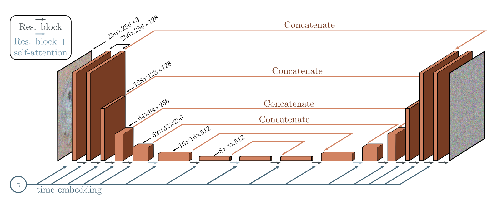
The U-Net is useful because:
- convolutions capture local image structure
- downsampling captures global context
- upsampling reconstructs spatial detail
- skip connections preserve fine-grained information
- timestep embeddings tell the network how noisy the input is
2.7 Diffusion Models: Pros and Cons
Pros
- High-quality outputs
- Good diversity and coverage
- Stable training compared with GANs
- Flexible conditioning: text, image, mask, depth, pose, segmentation
Cons
- Sampling is iterative and can be slow
- Training requires large datasets and compute
- Exact likelihood is not usually the main practical interface
- Generated images can still be plausible but wrong
2.8 Quiz: Diffusion
During classical diffusion training, what does the neural network often learn to predict?
A. The class label B. The original file name C. The added noise D. The image copyright license
Click for answer
C. The added noise.
The model receives a noisy image and the timestep, and learns to predict the noise that was added.
3 GANs and VAEs
3.1 Generative Adversarial Networks
GANs frame generation as an adversarial game between two networks:
- Generator \(g(\mathbf{z})\): creates fake samples from random noise
- Discriminator \(d(\mathbf{x})\): predicts whether a sample is real or fake
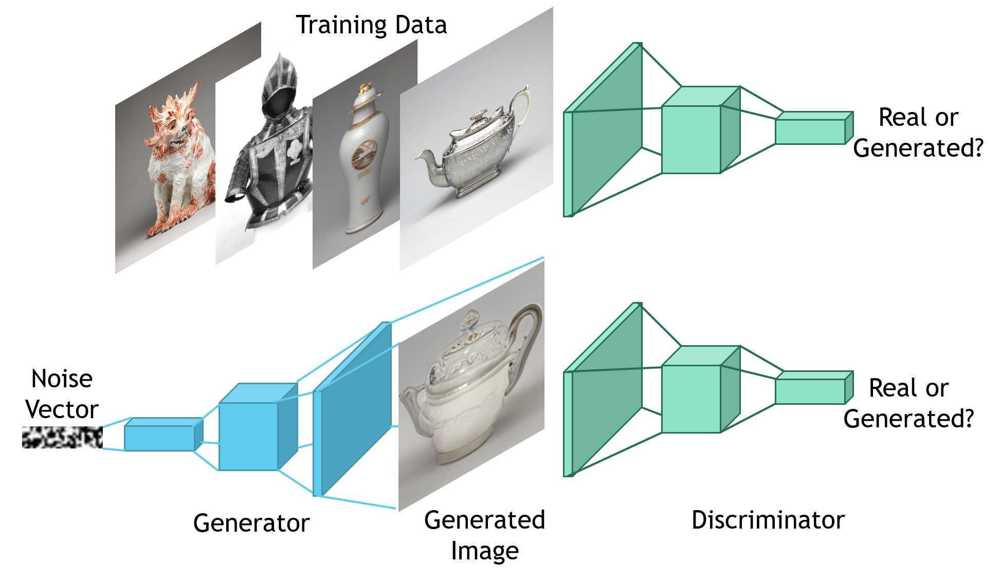
3.2 GAN Objective
The GAN objective can be written as:
\[ \min_{g} \max_{d} \mathbb{E}_{\mathbf{x} \sim p_{data}}[\log d(\mathbf{x})] + \mathbb{E}_{\mathbf{z} \sim p_z}[\log(1 - d(g(\mathbf{z})))] \]
Intuition:
- The discriminator learns to distinguish real from fake.
- The generator learns to fool the discriminator.
- Ideally, generated samples become indistinguishable from real samples.
3.3 GANs: Pros and Cons
Pros
- Fast sampling: one forward pass
- Can produce sharp images
- Historically very important for image generation
Cons
- Training can be unstable
- Mode collapse: generator produces limited variety
- No direct likelihood computation
- Modern text-to-image systems are less commonly pure GANs
3.4 Variational Autoencoders
VAEs combine an encoder and decoder with probabilistic latent variables.

A VAE learns:
- Encoder \(q_{\psi}(z|x)\): maps data \(x\) to a distribution over latent codes
- Decoder \(p_{\theta}(x|z)\): maps latent codes back to data
3.5 VAE Objective
VAEs optimize the Evidence Lower Bound:
\[ \text{ELBO} = \underbrace{ \mathbb{E}_{z \sim q_{\psi}(z|x)} [ \log p_{\theta}(x|z) ] }_{\text{Reconstruction}} - \underbrace{ \text{KL}(q_{\psi}(z|x) \| p(z)) }_{\text{Regularization}} \]
The reconstruction term encourages accurate reconstruction.
The KL term encourages the latent space to remain close to a simple prior, usually:
\[ p(z) = \mathcal{N}(0, I) \]
3.6 VAEs: Pros and Cons
Pros
- Principled probabilistic foundation
- Smooth and structured latent space
- Stable training
- Useful for representation learning
- Important component in latent diffusion models
Cons
- Classical VAEs often produce blurrier images
- High-quality generation usually requires more advanced variants
3.7 Important Connection: VAEs in Stable Diffusion
Even though classical VAEs are no longer the main state-of-the-art image generator, they remain very important.
In Stable Diffusion-style models, a VAE is used to compress images into a smaller latent space.
image → VAE encoder → latent representation
latent representation → VAE decoder → imageThe diffusion model does not need to denoise full-resolution pixels. It can denoise compressed latent representations instead.
4 Comparing Model Families
4.1 Tradeoffs
| Method | Latent variables | Density / likelihood | Fast sampling | Typical role today |
|---|---|---|---|---|
| Autoregressive | Sometimes | ✅ exact | ❌ slow | language, visual tokens, multimodal reasoning |
| GANs | ✅ | ❌ | ✅ fast | fast generation, historical importance |
| VAEs | ✅ | ⚠️ approximate | ✅ fast | latent spaces, compression, representation learning |
| Diffusion | ✅ | ⚠️ indirect | ❌ iterative | high-quality image/video generation |
Key observations
- No family achieves all desirable properties at once.
- GANs trade likelihood for fast and sharp sampling.
- VAEs provide structured latent spaces but may produce blur.
- Diffusion models are currently central to high-quality image generation.
- Autoregressive models remain important for language and multimodal reasoning.
4.2 Toy Distribution Comparison
Having explored the model families, it is useful to compare their behavior on simple distributions.
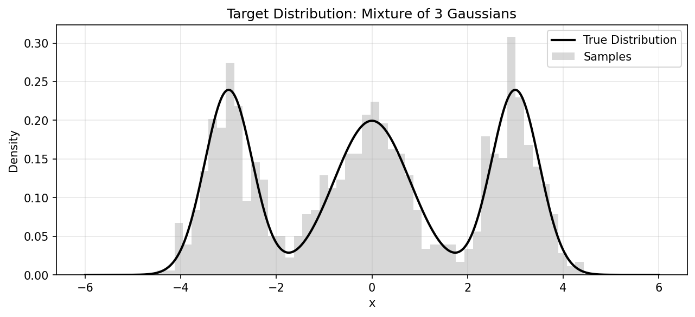
4.3 1D Model Comparison
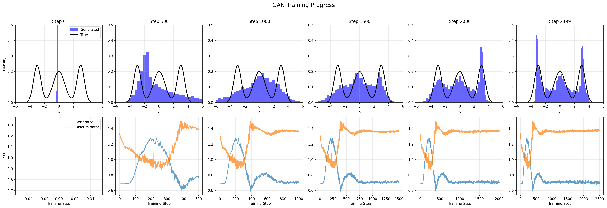
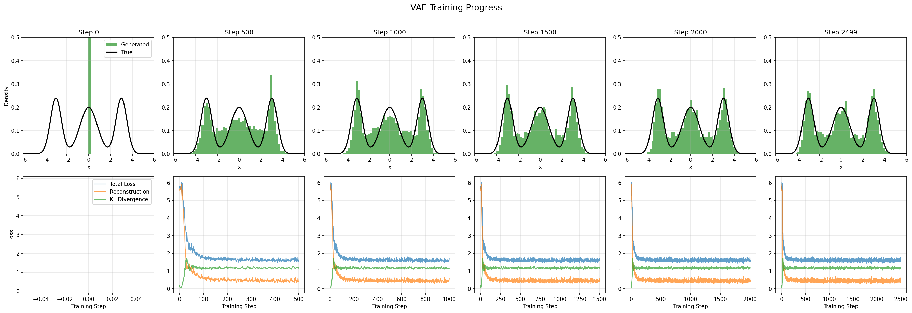
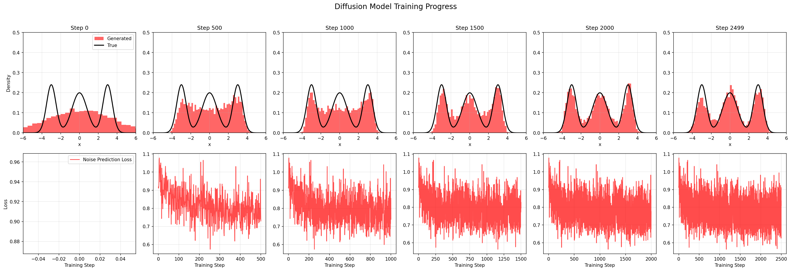
Training progression on a 1D bimodal distribution.
4.4 Final 1D Comparison
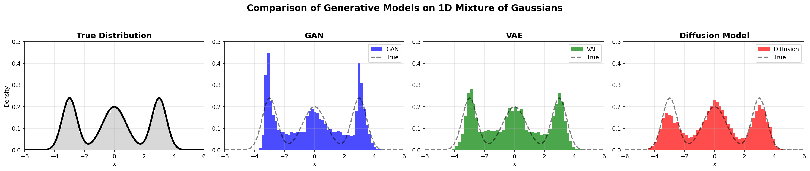
4.5 2D Model Comparison
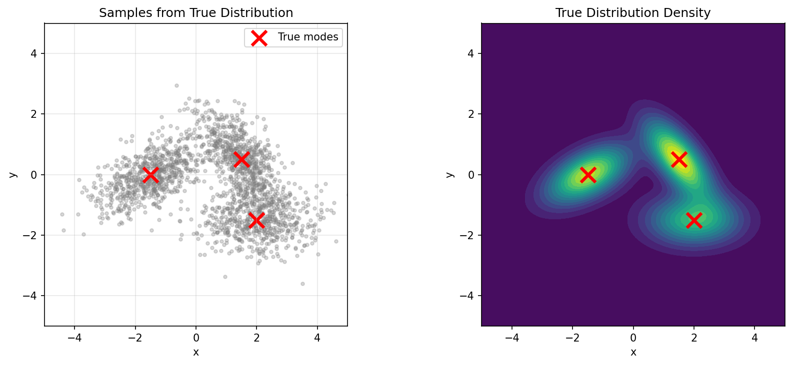
4.6 2D Training Progress
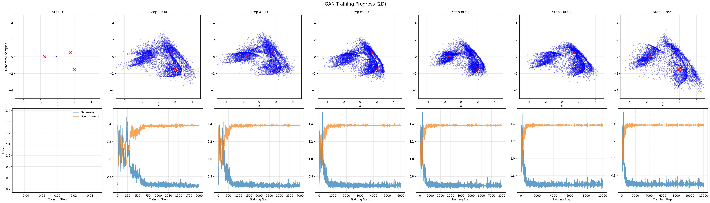
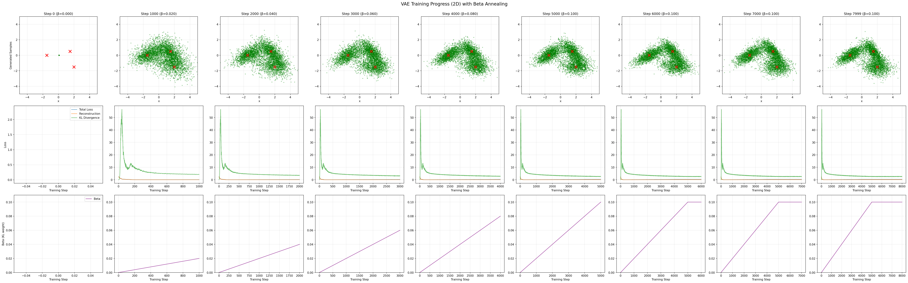
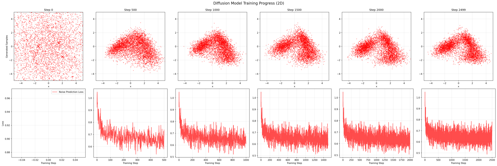
Training progression on a 2D spiral distribution.
4.7 Final 2D Comparison
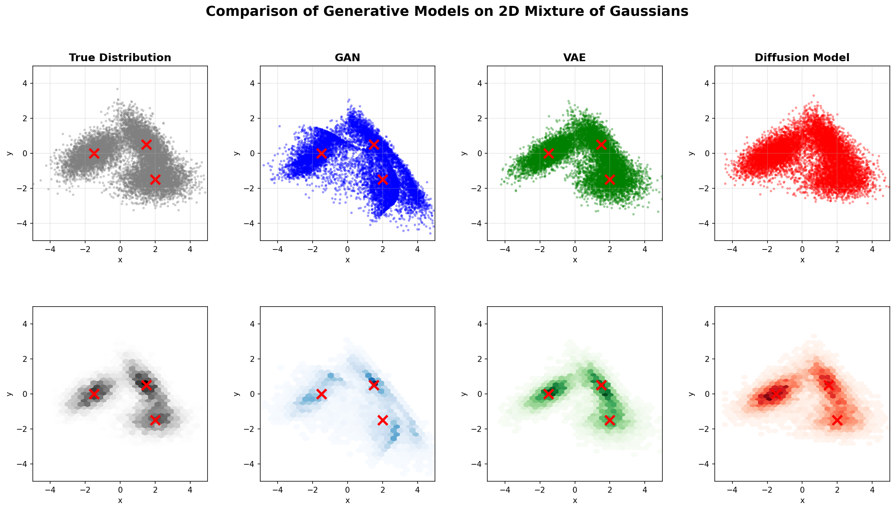
4.8 Discussion Question
A model generates very realistic images, but always produces only a small subset of possible outputs.
What property is weak?
Click for answer
Coverage or diversity.
This is related to mode collapse: the model produces realistic samples, but does not cover the full data distribution.
5 Conditional Generation
5.1 From Unconditional to Conditional Generation
So far, we considered unconditional generation:
\[ p(\mathbf{x}) \]
But most useful applications require conditional generation:
\[ p(\mathbf{x}|\mathbf{c}) \]
where \(\mathbf{c}\) is a condition.
Examples of conditions:
- text prompt
- class label
- reference image
- mask
- sketch
- depth map
- pose
- segmentation map
- style image
- previous conversation context
5.2 What Can the Condition Be?
| Condition | Example task |
|---|---|
| Text | “A photo of a cat wearing sunglasses” |
| Class label | Generate the digit “7” |
| Image | Image-to-image translation |
| Mask | Inpainting |
| Depth map | Preserve 3D layout |
| Pose | Generate a person in a specific pose |
| Segmentation map | Control object layout |
| Product photo | Generate variants while preserving identity |
Conditional generation is the bridge from “random image generator” to useful visual tool.
5.3 Conditional GANs
In conditional GANs, the generator receives the condition:
\[ g(\mathbf{z}, \mathbf{c}) \rightarrow \mathbf{x} \]
The discriminator may also receive the condition:
\[ d(\mathbf{x}, \mathbf{c}) \rightarrow \text{real/fake} \]
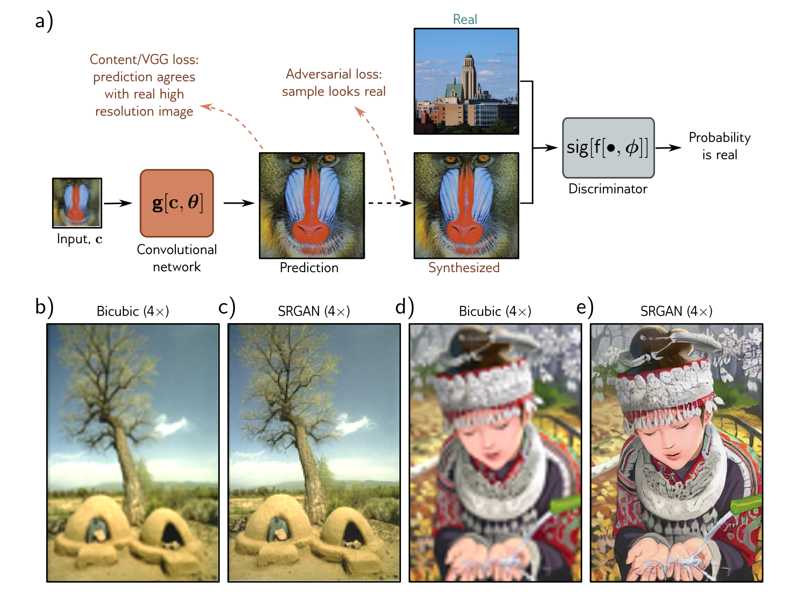
5.4 Should the Discriminator See the Condition?
In conditional generation, the generator usually receives the condition.
The discriminator may or may not receive it.
| Discriminator input | What it checks |
|---|---|
| \(d(\mathbf{x})\) | Does the image look realistic? |
| \(d(\mathbf{x}, \mathbf{c})\) | Does the image look realistic and match the condition? |
If the discriminator does not receive \(\mathbf{c}\), consistency must be enforced by other losses or paired supervision.
For text-to-image generation, it is not enough for an image to look realistic. It must also match the prompt.
5.5 Conditioning in Diffusion Models
Diffusion models can be conditioned in several ways:
- concatenate condition channels
- use class embeddings
- use text embeddings
- use cross-attention
- use image embeddings
- add control networks for spatial conditions
In text-to-image diffusion, the most important mechanism is usually cross-attention between image features and text embeddings.
5.6 Control-Based Generation
Control-based generation adds stronger spatial constraints.
Examples:
- edge map \(\rightarrow\) image
- depth map \(\rightarrow\) image
- pose skeleton \(\rightarrow\) person image
- segmentation map \(\rightarrow\) scene image
- mask + prompt \(\rightarrow\) inpainted region
Prompting gives semantic control. Control images give spatial control.
5.7 Student Interaction: Control vs. Creativity
Rank the following methods from most creative freedom to most control:
- Text-to-image only
- Image-to-image
- Inpainting with a mask
- ControlNet with depth or pose
- Product rendering with fixed geometry
Possible answer
A plausible ranking is:
Text-to-image only → image-to-image → inpainting → ControlNet → fixed product rendering.
As control increases, creative freedom often decreases.
6 Stable Diffusion and Latent Diffusion
6.1 Why Pre-Trained Models Matter
Training modern image generation models from scratch requires:
- massive image-text datasets
- large compute clusters
- careful filtering and safety work
- extensive evaluation
- expensive training runs
For most practical applications, the useful workflow is:
pre-trained model
↓
prompting / conditioning / editing
↓
optional adaptation with LoRA or fine-tuningMost users do not train image generators from scratch. They use or adapt pre-trained models.
6.2 Stable Diffusion: Practical Foundation
Stable Diffusion is a family of text-to-image models based on latent diffusion.
Instead of running diffusion directly in pixel space, Stable Diffusion runs diffusion in a compressed latent space.

6.3 Stable Diffusion Pipeline

6.4 The Modern Text-to-Image Pipeline
prompt
↓
text encoder
↓
text embeddings
↓
denoising model conditioned on text
↓
clean latent
↓
VAE decoder
↓
imageImportant user controls:
- prompt
- negative prompt
- random seed
- number of denoising steps
- guidance strength
- image input
- mask
- ControlNet condition
- LoRA adapter
6.5 Why Latent Diffusion?
Running diffusion directly on high-resolution images is expensive.
Example:
512 × 512 × 3 = 786,432 pixel valuesLatent diffusion compresses the image first:
512 × 512 image
↓ VAE encoder
64 × 64 × 4 latentThen diffusion operates on the smaller latent representation.
Latent diffusion makes high-resolution generation much more practical.
6.6 Text Conditioning
Stable Diffusion conditions generation on text.
Conceptually:
prompt
↓
text encoder
↓
text tokens / embeddings
↓
cross-attention inside denoising network
↓
image follows promptThe denoising model does not only ask:
What image is realistic?
It asks:
What image is realistic given this text?
6.7 Guidance Strength
Many diffusion systems use guidance to trade off creativity and prompt adherence.
Low guidance:
- more freedom
- weaker prompt following
- sometimes more natural images
High guidance:
- stronger prompt adherence
- less diversity
- possible artifacts or over-saturation
Guidance is a practical knob: it changes how strongly the model follows the condition.
6.8 Prompting as Specification
A useful prompt often specifies:
subject + attributes + scene + style + camera + constraintsExample:
Studio product photo of a white leather running shoe,
side view, clean white background, soft shadows,
realistic material texture, no text, no logo, no human foot.Prompting is not magic wording. It is specification under uncertainty.
6.9 Student Interaction: Prompt Debugging
Improve this prompt:
A nice shoe.Add:
- product type
- view
- background
- lighting
- material
- constraints
- negative constraints
Example improved prompt
Studio product photo of a white leather running shoe,
side view, clean white background, soft shadows,
high detail, realistic material texture,
no text, no logo, no human foot.7 Image Editing and Controlled Workflows
7.1 Not Only Text-to-Image
Modern generative image systems are not only used to create images from scratch.
Important workflows:
| Workflow | Description |
|---|---|
| Text-to-image | Generate image from prompt |
| Image-to-image | Transform existing image |
| Inpainting | Replace selected region |
| Outpainting | Extend image beyond borders |
| Super-resolution | Add plausible detail |
| ControlNet | Control layout/pose/depth/edges |
| LoRA | Adapt style, subject, or domain |
7.2 Image-to-Image
Image-to-image generation starts from an existing image and modifies it.
The key parameter is often strength.
| Strength | Effect |
|---|---|
| Low | preserve original image strongly |
| Medium | visible change, some structure preserved |
| High | large change, original may be mostly lost |
Image-to-image is useful when we want variation, not a completely new image.
7.3 Inpainting
Inpainting modifies a selected region while preserving the rest of the image.
image + mask + prompt → edited imageExamples:
- remove an object
- change clothing
- replace background element
- add furniture
- fix image defects
Inpainting can make image manipulation very easy. This raises authenticity and trust issues.
7.4 ControlNet and Spatial Conditioning
ControlNet-style methods add spatial control to pre-trained diffusion models.
prompt + condition image → controlled outputCondition image examples:
- edge map
- depth map
- pose skeleton
- segmentation map
- normal map
ControlNet is important because it separates what should appear from where it should appear.
8 Fine-Tuning and Adaptation
8.1 Why Fine-Tune?
Pre-trained models are powerful but generic.
Fine-tuning or adaptation is useful when we need:
- a specific visual style
- a specific product
- a specific character
- a domain-specific image type
- consistent brand imagery
- specialized medical, satellite, or industrial images
But full fine-tuning is expensive.
This motivates efficient adaptation.
8.2 LoRA
LoRA means Low-Rank Adaptation.
Instead of updating a full weight matrix \(W\), LoRA learns a small low-rank update:
\[ \Delta W = BA \]
where:
- \(B \in \mathbb{R}^{d \times r}\)
- \(A \in \mathbb{R}^{r \times k}\)
- \(r \ll \min(d, k)\)
The original model weights stay frozen.

8.3 Why LoRA Is Useful
LoRA adapters are popular because they are:
- much smaller than full models
- cheaper to train
- easier to share
- easy to switch on/off
- useful for styles, subjects, and domains
Common use cases:
- product photography style
- anime or illustration style
- specific character
- architectural visualization
- domain adaptation
8.4 Quiz: LoRA
Why is LoRA useful for adapting large image generation models?
Click for answer
LoRA freezes the original model and trains only small low-rank update matrices. This greatly reduces trainable parameters, memory use, and compute cost.
9 Recent Advances: Diffusion Transformers and Multimodal Generators
9.1 From U-Net Diffusion to Diffusion Transformers
Earlier latent diffusion models, such as Stable Diffusion 1/2/XL, use a convolutional U-Net as the denoising network.
Recent high-end models increasingly replace the U-Net with a Transformer backbone.
latent image
↓
patch tokens
↓
Transformer denoiser / flow model
↓
denoised latent
↓
VAE decoder
↓
imageThe major architecture shift is: U-Net denoiser → Transformer denoiser.
9.2 Why Transformers?
Diffusion Transformers are attractive because:
- images, videos, and text can all be represented as token sequences
- attention can connect distant parts of an image
- scaling behavior is strong and familiar from LLMs and ViTs
- multimodal conditioning becomes more natural
- the same idea can extend from images to video using spacetime patches
The frontier is moving toward treating visual generation as token-based multimodal generation.
9.3 U-Net Diffusion vs. Diffusion Transformer
| Aspect | U-Net Diffusion | Diffusion Transformer |
|---|---|---|
| Representation | spatial feature maps | latent/image tokens |
| Main operation | convolutions + skip connections | self-attention + MLP blocks |
| Strength | efficient local image processing | global context and scaling |
| Conditioning | often cross-attention to text | multimodal token interaction |
| Examples | Stable Diffusion 1/2/XL | SD3, FLUX, Sora-style systems |
9.4 Modern Examples
| Model | Relevant idea |
|---|---|
| Stable Diffusion 3 / 3.5 | Multimodal Diffusion Transformer |
| FLUX.1 | rectified flow transformer |
| Sora | diffusion transformer for video |
| Hunyuan-DiT | text-to-image diffusion transformer |
| PixArt-Σ | efficient high-resolution Diffusion Transformer |
These models differ in training objectives and implementation details, but share the broader shift toward Transformer-based generative backbones.
9.5 Diffusion vs. Flow Matching
Many recent systems are described not only as diffusion models, but also as flow matching or rectified flow models.
For this course, the high-level intuition is enough:
| Classical diffusion | Flow / rectified flow |
|---|---|
| learn iterative denoising from noise to data | learn a transformation path from noise to data |
| often predicts noise | often predicts velocity / direction |
| many sampling steps | can support efficient sampling |
| same broad goal: generate realistic samples | same broad goal: generate realistic samples |
For students, the key point is not the exact objective. The important trend is iterative generation with powerful Transformer backbones.
9.6 Recent Advances: Native Multimodal Image Systems
Older text-to-image systems were mostly:
prompt → text encoder → diffusion model → imageNewer systems increasingly look like:
text + images + conversation + world knowledge + tools
↓
multimodal reasoning
↓
image generation / image editing
↓
review, revise, iterateThe frontier is not only better image quality. It is controllability, consistency, editing, reasoning, and workflow integration.
9.7 Example: Nano Banana 2 / Gemini Image
Recent Gemini image models illustrate the shift from image generator to multimodal visual assistant.
Important capabilities:
- stronger instruction following
- better text rendering
- image editing through natural language
- subject and object consistency
- support for diagrams and infographics
- use of world knowledge and retrieved information
- production-oriented output formats and aspect ratios
The exact architecture of proprietary systems is usually not fully public. Teach the conceptual pattern, not unsupported architectural details.
9.8 Example: Gemma-Style Multimodal Models
Gemma-style multimodal models are not primarily image generators.
They are useful for image understanding and multimodal reasoning.
image / video / audio
↓
modality encoder
↓
visual/audio tokens
↓
language model
↓
text answer / reasoning / tool callExamples of use:
- image question answering
- chart understanding
- OCR
- document parsing
- user-interface understanding
- visual inspection
- acting as a critic or evaluator for generated images
Image generation and image understanding are increasingly connected in larger multimodal systems.
9.9 Why This Matters for Computer Vision
Recent image generation systems are becoming:
- generators
- editors
- multimodal assistants
- visual reasoning systems
- synthetic data tools
- image manipulation tools
- design workflow components
This changes the practical role of computer vision.
Instead of only asking:
What class is this image?
we increasingly ask:
How can we understand, edit, generate, verify, and control visual content?
9.10 Student Interaction: What Changed?
Consider these three tasks:
- Generate a beautiful fantasy landscape.
- Edit this product image so the shoe is red but keep everything else identical.
- Create a German infographic explaining photosynthesis with correct labels.
Which task is mostly about image quality?
Which tasks require reasoning, control, or factual correctness?
Possible discussion
The fantasy landscape mainly needs aesthetic quality.
The product edit requires identity preservation, localization, and consistency.
The infographic requires text rendering, layout, factual correctness, and semantic understanding.
9.11 Quiz: Diffusion Transformers
What is the main architectural change in a Diffusion Transformer compared with classical Stable Diffusion?
A. It removes the VAE decoder B. It replaces the U-Net denoiser with a Transformer over latent/image patches C. It no longer uses noise or iterative generation D. It only works for text, not images
Click for answer
B. It replaces the U-Net denoiser with a Transformer over latent/image patches.
10 Practical Ecosystem
10.1 Practical Decision Map
| Goal | Practical approach |
|---|---|
| Generate concept art | API model, Midjourney, Gemini image, Firefly |
| Generate many images programmatically | OpenAI API, Replicate, Vertex AI, Hugging Face Diffusers |
| Run locally | Diffusers, ComfyUI, Automatic1111 |
| Edit existing image | inpainting, image-to-image, instruction-based editing |
| Preserve pose/layout | ControlNet, depth, pose, segmentation conditioning |
| Adapt to style/brand/domain | LoRA, DreamBooth, fine-tuning |
| Need exact product fidelity | consider rendering, compositing, or human review |
10.2 Open-Source and Open-Weight Ecosystem
Useful platforms and tools:
| Tool/platform | Use case |
|---|---|
| Hugging Face | model hub, Diffusers, Spaces, APIs |
| Diffusers | Python library for diffusion pipelines |
| ComfyUI | node-based image generation workflows |
| Automatic1111 | local Stable Diffusion web interface |
| CivitAI | community models, LoRAs, styles |
| Replicate | hosted model inference via API |
Always check model licenses before commercial use.
10.3 Example: Diffusers
from diffusers import StableDiffusionPipeline
pipe = StableDiffusionPipeline.from_pretrained(
"stabilityai/stable-diffusion-2-1"
)
image = pipe(
"A studio product photo of a cat-shaped coffee mug"
).images[0]For teaching and prototyping, hosted APIs are often simpler than local GPU setup.
10.4 Closed-Source Platforms
Commercial platforms provide convenient access to frontier models:
| Platform | Typical strength |
|---|---|
| OpenAI image models | instruction following, editing, ChatGPT integration |
| Google Gemini / Imagen / Nano Banana | multimodal integration, image editing, factual/diagram-like tasks |
| Adobe Firefly | design workflows, Creative Cloud integration |
| Midjourney | aesthetic and artistic generation |
| Replicate | unified API for many models |
| Vertex AI / AWS Bedrock / Azure | enterprise deployment and governance |
10.5 Hardware Requirements
Approximate practical view:
| Task | Typical requirement |
|---|---|
| API image generation | no local GPU |
| Local SD 1.5 inference | consumer GPU, around 4–8 GB VRAM |
| Local SDXL inference | around 8–12+ GB VRAM |
| Local large modern models | often 16–24+ GB VRAM or quantization/offloading |
| LoRA fine-tuning | usually 12–24+ GB VRAM |
| Full model training | multi-GPU cluster |
For most practitioners, the realistic workflow is API usage or adapting pre-trained models, not full training.
11 Evaluation and Limitations
11.1 Evaluating Generative Models Is Hard
Classification evaluation is relatively straightforward:
prediction vs. labelGenerative model evaluation is harder because there are many valid outputs.
A generated image can be:
- realistic but not prompt-aligned
- prompt-aligned but ugly
- beautiful but factually wrong
- diverse but low quality
- high quality but biased
- useful for humans but bad under automatic metrics
11.2 Evaluation Criteria
| Criterion | Question |
|---|---|
| Visual quality | Does it look realistic or aesthetically good? |
| Diversity | Does it cover many possible outputs? |
| Prompt alignment | Does it match the prompt? |
| Factuality | Are visual claims correct? |
| Consistency | Does the same subject remain recognizable? |
| Edit fidelity | Did only the intended part change? |
| Safety | Does it avoid harmful outputs? |
| Bias | Are outputs systematically skewed? |
11.3 Common Metrics
| Metric / method | Intuition | Limitation |
|---|---|---|
| Likelihood | probability under model | not available for all models |
| Inception Score | confident and diverse classifier predictions | ImageNet-centric, limited |
| FID | distribution distance in feature space | can miss prompt alignment |
| CLIPScore | text-image alignment | can be gamed, not full quality |
| Human preference | direct user judgment | expensive, subjective |
| Task-specific evaluation | evaluate downstream usefulness | application-dependent |
For applied work, task-specific evaluation is often more meaningful than a generic image-generation score.
11.4 Important Practical Limitation
Generative image models are excellent at plausibility, but not always at correctness.
They may fail at:
- exact text
- counting objects
- precise geometry
- brand/product fidelity
- medical or scientific accuracy
- consistent identities across images
- rare or underrepresented concepts
Generated images should be reviewed like model predictions, not accepted as ground truth.
11.5 Quiz: Evaluation
A model generates beautiful product images, but the product shape changes subtly between generations.
Which evaluation criterion is weak?
Click for answer
Subject or product consistency.
This is critical for commercial product imagery, where the object identity must remain accurate.
12 Synthetic Data
12.1 Synthetic Training Data
Generative models can create synthetic data for predictive models.
Potential benefits:
- augment rare classes
- simulate unusual conditions
- balance datasets
- create privacy-preserving examples
- prototype before collecting real data
Potential risks:
- synthetic artifacts
- unrealistic distributions
- bias amplification
- overfitting to generator style
- poor transfer to real data
12.2 Student Interaction: Synthetic Data Debate
You have only 100 labeled defect images.
Should you generate 10,000 synthetic defect images and train a classifier?
Argue both sides.
Suggested conclusion
Synthetic data can help, but it should not replace real validation.
A good strategy is to use synthetic data as augmentation, then evaluate on a real, untouched holdout set.
13 Authenticity, Bias, and Societal Implications
13.1 Real, Edited, or Generated?
Modern image generation changes what it means to trust an image.
An image can be:
- real and unedited
- real but selectively edited
- generated from scratch
- generated from a real reference
- misleading because of context
- realistic but fictional
The important question is not always “AI or not?”. Often the better question is: “What is the provenance of this image?”
13.2 Image Manipulation
Inpainting and instruction-based editing make realistic manipulation accessible.
Examples:
- remove a person
- add an object
- change weather
- change a facial expression
- alter a document-like image
- create fake evidence
Generation and editing tools create value, but they also increase the need for verification, provenance, and responsible use.
13.3 Synthetic Data Pollution
What happens if generative models are trained on increasingly synthetic data?

13.4 Bias
Generative models learn from large-scale datasets.
If the data contains biases, the model may reproduce or amplify them.
Bias can appear in:
- occupations
- beauty standards
- gender presentation
- ethnicity and culture
- age
- geography
- socioeconomic signals
- default visual styles
Bias in generated images is not only a technical artifact. It can affect how people, places, and professions are represented.
13.5 Authenticity Discussion
A realistic image of a public event appears online.
What are reasons it may be unreliable as evidence?
Possible answers
It may be generated, edited, staged, taken out of context, cropped misleadingly, distributed by an unreliable source, or missing provenance metadata.
14 Summary
14.1 What You Should Remember
- Generative models learn to create plausible samples from a data distribution.
- Different model families make different tradeoffs.
- Diffusion models became central because they provide high-quality and diverse image generation.
- Stable Diffusion made this practical by running diffusion in VAE latent space.
- Conditional generation turns image models into useful tools.
- Control mechanisms such as masks, image inputs, depth maps, pose, and ControlNet improve practical usefulness.
- LoRA enables efficient adaptation to styles, subjects, and domains.
- Recent frontier systems increasingly use Transformer-based diffusion or flow backbones.
- Multimodal image systems are becoming visual assistants, not just image generators.
- Generated images require careful evaluation, provenance awareness, and human review.
14.2 Final Quiz
Why is latent diffusion more efficient than pixel-space diffusion?
Answer
Because the diffusion process runs in a compressed latent space rather than directly on all image pixels.
What is the main purpose of conditioning in image generation?
Answer
Conditioning allows the model to generate images that match a given input, such as a text prompt, class label, image, mask, depth map, or pose.
Why are Diffusion Transformers important for recent image and video generation?
Answer
They replace the convolutional U-Net denoising backbone with a Transformer operating on image or latent tokens. This supports scaling, global context, and multimodal token-based generation.
Why is generated image quality not enough for real applications?
Answer
An image can look good but still be factually wrong, biased, inconsistent, poorly aligned with the prompt, or misleading.